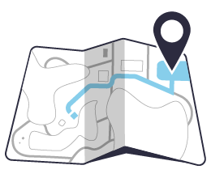
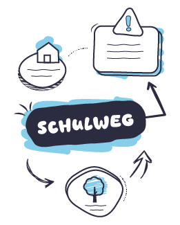

Hinweis: Bitte keine sensiblen Daten wie Namen oder Adressen auf den Karten. Die Aufgabe darf anonym oder abstrahiert sein.
👩🏫 Didaktischer Hinweis für Lehrkräfte
Didaktischer Hinweis für Lehrkräfte zur Aufgabe „Kartiere deinen Schulweg“ Die Aufgabe, den eigenen Schulweg zu kartieren, kann je nach Wohnort, Alter und individuellen Fähigkeiten der Schülerinnen und Schüler unterschiedlich anspruchsvoll sein. Zudem ist der Datenschutz zu beachten. Um allen Kindern eine erfolgreiche Bearbeitung zu ermöglichen, können folgende Differenzierungen und Alternativen angeboten werden:
👩🏫 Didaktischer Hinweis für Lehrkräfte zur Aufgabe „Kartiere deinen Schulweg“

01. Differenzierungsmöglichkeiten:
Wegauswahl: Nicht alle Kinder müssen den Weg von zu Hause zur Schule kartieren. Alternativ kann auch der Weg zur Turnhalle, zur Bibliothek oder zu einem anderen bekannten Ort gewählt werden.
Detailtiefe: Je nach den Fähigkeiten kann die Karte unterschiedlich detailliert gestaltet werden – von einer einfachen Skizze bis hin zur beschrifteten Karte mit Straßennamen.
Darstellungsform: Neben dem Zeichnen sind auch andere Formen möglich, z. B. eine Collage, ein Modell oder digitales Kartieren mit geeigneten Apps.
02. Möglichkeiten zur Ergebnissicherung und Überprüfung:
Vergleich mit realen Wegen: Schüler*innen können (mit Einverständnis der Eltern) ihren Weg filmen oder fotografieren. Anschließend wird das Material gemeinsam analysiert.
Austausch in Kleingruppen: Kinder vergleichen ihre Karten in kleinen Gruppen und besprechen Unterschiede.
Präsentation und Reflexion: Einzelne Karten werden vorgestellt und erläutert.
Checkliste: Die Lehrkraft stellt eine Liste bereit mit markanten Elementen wie Ampeln, Bushaltestellen oder Gebäuden.
Aufgabe: Zeichne eine Mental Map von deinem Schulweg!
Tipp: Deine Mental Map muss nicht wie ein Stadtplan aussehen. Sie soll zeigen, wie du deinen Schulweg erlebst und was für dich wichtig ist. Viel Spaß beim Zeichnen deiner mentalen Karte! Arbeitsblatt auch auf Tutory vorhanden: Arbeitsblatt - 5.2 Mein Schulweg - Geographie - tutory.de

Erklärung: Eine Mental Map ist eine selbst gezeichnete Karte, die deinen Schulweg aus deiner eigenen Erinnerung und Sicht zeigt – mit dem, was dir besonders auffällt und wichtig ist. Sie muss nicht maßstabsgetreu sein, sondern soll widerspiegeln, wie du dich orientierst.
So gehst du vor:
Zeichne auf ein Blatt Papier eine Mental Map, um anderen zu zeigen, wie du morgens von zu Hause zur Schule kommst. Was nimmst du auf diesem Weg wahr? Beginne bei deinem Zuhause und ende bei deiner Schule. (Alternativ kannst du auch den Weg zur Turnhalle oder zur Schwimmhalle aufzeichnen.)
Trage wichtige Dinge ein, die dir auf dem Weg auffallen (z.B. Bushaltestellen, Ampeln, besondere Gebäude, Bäume, Spielplätze, Geschäfte).
Du kannst auch Farben und kleine Symbole benutzen, um deinen Weg anschaulicher zu machen.
Beschrifte die wichtigsten Orte.
Beschreibe dann in ein paar Sätzen, wie dein Schulweg ungefähr aussieht, ohne genaue Adressen oder Namen zu nennen.
🎧Hier kannst du dir die Aufgabenstellung anhören:
Abgabe: Zeige deine Mental Map deiner Lehrkraft oder gib sie im Unterricht ab. (Im Moodle-Kurs gab es hier einen Upload-Ordner.)
Bonus zur Aufgabe: Gefahren auf dem Schulweg
Überlege dir, welche gefährlichen Situationen dir auf dem Weg zur Schule begegnen könnten (z. B. unübersichtliche Kreuzungen, viel befahrene Straßen, parkende Autos, Baustellen).
Schreibe mindestens drei dieser Gefahren auf und erkläre, warum sie gefährlich sind.
Überlege dir zu jeder Gefahr eine Möglichkeit, wie du dich dort besonders sicher verhalten kannst.
Beispiel: eine Straße ohne Zebrastreifen überqueren. Warum gefährlich? Autos fahren oft schnell und halten nicht immer an Sicheres Verhalten: Anhalten, nach links und rechts schauen, erst gehen, wenn die Straße frei ist. Jetzt bist du dran!